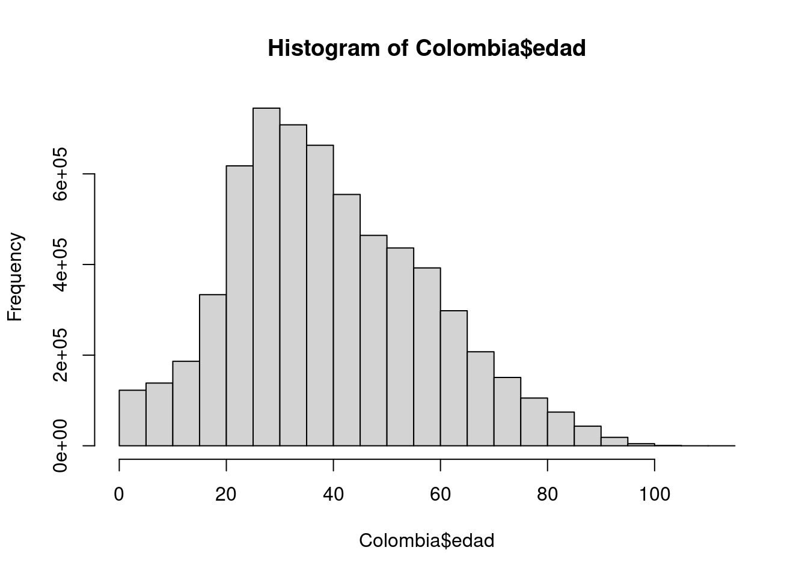
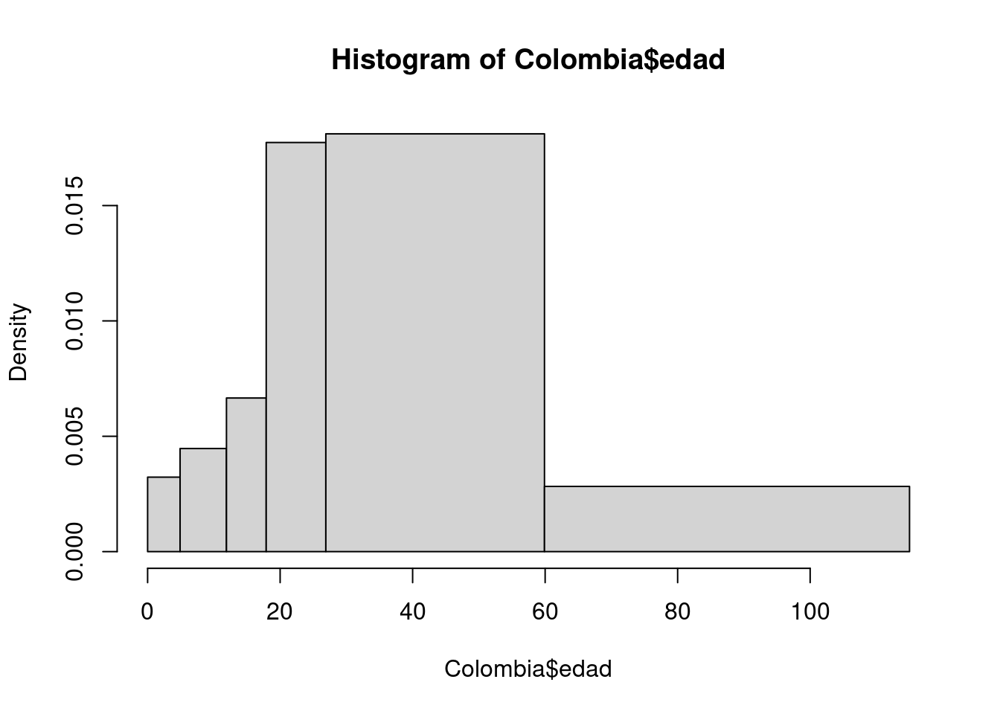
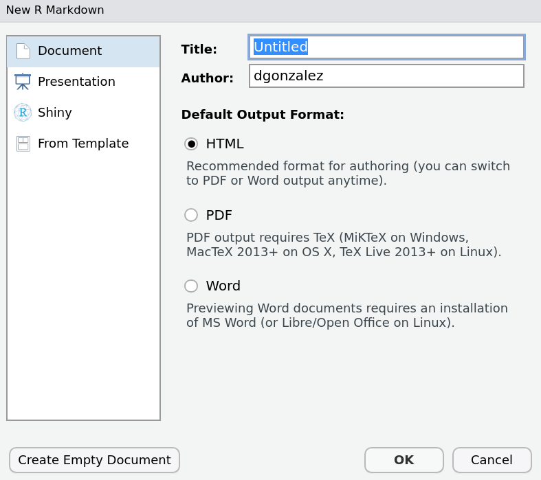

Código 1.2
Módulo 1- Unidad 1.2
dgonzalez

1. Introducción
Al tener una base de datos se requiere resumirlos en una tabla o en indicadores que faciliten su análisis, dependiendo el tipo de variable ( cualitativas o cuantitativas) la tabla puede tener diferentes columnas.
En el caso de los indicadores las variables cualitativas se les resumen en el nivel con mayor frecuencias a la que se le llama MODA
Las variables cuantitativas tiene un gran número de indicadores que se dividien en tres categorias:
- Indicadores de tendencia central
- Indicadores de dispersión
- Indicadores de forma
A continuación se indica como realizar el proceso utilizando RStudio, bajo el supuesto que se cuenta con una base de datos que se ha importado en RStudio.
2. Tablas de frecuencia
Resumirlos datos en tablas facilita su análisis y también su representación gráfica. Varios gráficos están basados en tablas de frecuencia como veremos en la unidad 1.3
Antes de empezar vamos a cargar la base construida en el código anterior y las dos bases de Dataset de R
- Base de datos Colombia
Colombia=readRDS(file = "data/Colombia.RDS")- Base de datos iris
iris=data(iris)- Base de datos ventas
library(readr)
ventas <- read_csv("data/ventas.csv")Tablas variables cualitativas
Iniciaremos con la construcción de tablas para variables cualitativas en escala nominal. Recordemos que las variables medidas en esta escala no presentan orden especial y en algunos casos son ordenadas de mayor a menor frecuencia
Utilizaremos en este caso la función table()
ft1=table(ventas$Metodo_Pago)%>%
as.data.frame()
colnames(ft1)=c("Tipo de tarjeta", "Frecuencia Absoluta")
ft1=flextable(ft1)
set_flextable_defaults(
font.size = 10, font.family = "Helvetica",
font.color = "#333333",
table.layout = "fixed",
border.color = "gray",
padding.top = 3, padding.bottom = 3,
padding.left = 4, padding.right = 4)
ft1 <- ft1 %>%
width(j = 1, width = 2) %>%
width(j = 2, width = 1)
ft1Tipo de tarjeta | Frecuencia Absoluta |
American Express | 4 |
Discover | 8 |
MasterCard | 28 |
Star Card | 140 |
Visa | 20 |
El resultado corresponde a un conteo de cada uno de los valores de la variable. En caso de que se requiera calcular la proporción que corresponde cada caso utilizamos la función : prop.table() y se la aplicamos a la tabla anterior
ft2=table(ventas$Metodo_Pago)%>%
prop.table() %>%
as.data.frame()
colnames(ft2)=c("Tipo de tarjeta", "Frecuencia relativa")
ft2=flextable(ft2)
set_flextable_defaults(
font.size = 10, font.family = "Helvetica",
font.color = "#333333",
table.layout = "fixed",
border.color = "gray",
padding.top = 3, padding.bottom = 3,
padding.left = 4, padding.right = 4)
ft2 <- ft2 %>%
width(j = 1, width = 2) %>%
width(j = 2, width = 1)
ft2Tipo de tarjeta | Frecuencia relativa |
American Express | 0.02 |
Discover | 0.04 |
MasterCard | 0.14 |
Star Card | 0.70 |
Visa | 0.10 |
Si utilizamos la función freq del paquete summarytools, la salida es una tabla más elaborada
summarytools::freq(ventas$Metodo_Pago, cumul = F)Frequencies
Freq % Valid % Total
---------------------- ------ --------- ---------
American Express 4 2.00 2.00
Discover 8 4.00 4.00
MasterCard 28 14.00 14.00
Star Card 140 70.00 70.00
Visa 20 10.00 10.00
<NA> 0 0.00
Total 200 100.00 100.00Tablas variables cuantitativas
Para el caso de las variables cuantitativas que presentan muchos valores difentes construir una tabla como las anteriores no tiene sentido, pues salen muchas categorias probablemente con frecuencia uno.
En este caso es necesario construir rangos que den sentido y que permitan resumir la información para una facil interpretación.
El ejemplo a continuación da cuenta de ello. Supongamos que queremos analizar la variable edad y para ello debemos establecer los limites y cuantos intervalo vamos aconstruir. En este caso tenemos tres alternativas posible_
- Tomar los intervalos construidos en un estudio anterior con cual queremos comparar los nuestros
- Tomar intervalos de acuerdo a estudios anteriores o teorias sobre el tema
- Tomar intervalos de igual longitud. En este caso existen diferentes alternativas para establecer el numero de intervalos a construir. Uno de ellos indica como respuesta a este interrogante la formula construida por Sturgues (se puede conocer mediante la función nclass.Sturges(variable) ) que es utilizada por otras funcione en R
En el caso de la variable Edad procederemos asi:
Consultados los ciclos de la vida tenemos: + Primera Infancia (0-5 años) + Infancia (6 - 11 años) + Adolescencia (12 - 17 años) + Juventud (18 - 26 años) + Adultez (27- 59 años) + Persona Mayor (60 años o mas) envejecimiento y vejez
Colombia$edadR[Colombia$edad<=5]="1. (0 a 5 años]"
Colombia$edadR[Colombia$edad>5 & Colombia$edad<=11]="2. (5 a 11 años]"
Colombia$edadR[Colombia$edad>11 & Colombia$edad<=17]="3. (11 a 17 años]"
Colombia$edadR[Colombia$edad>17 & Colombia$edad<=26]="4. (17 a 26 años]"
Colombia$edadR[Colombia$edad>26 & Colombia$edad<=59]="5. (26 a 59 años]"
Colombia$edadR[Colombia$edad>59]="6. (Más de 59 años]"
summarytools::freq(Colombia$edadR)Frequencies
Freq % Valid % Valid Cum. % Total % Total Cum.
------------------------- --------- --------- -------------- --------- --------------
1. (0 a 5 años] 121650 1.95 1.95 1.95 1.95
2. (5 a 11 años] 171851 2.75 4.70 2.75 4.70
3. (11 a 17 años] 249929 4.00 8.70 4.00 8.70
4. (17 a 26 años] 998126 15.98 24.67 15.98 24.67
5. (26 a 59 años] 3735986 59.80 84.47 59.80 84.47
6. (Más de 59 años] 970092 15.53 100.00 15.53 100.00
<NA> 0 0.00 100.00
Total 6247634 100.00 100.00 100.00 100.00Esta tabla nos permite identificar los rangos de mayor frecuencia
Tambien podemo realizar una tabla sin tener que realizar la recodificación. Esto se logra con la función hist()
h=hist(Colombia$edad)
h$breaks # puntos de corte [1] 0 5 10 15 20 25 30 35 40 45 50 55 60 65 70 75 80 85 90
[20] 95 100 105 110 115h$counts # frecuencias absolutas en cada intervalo [1] 121650 137825 186039 332770 616598 743690 706779 661657 553218 463150
[11] 435371 391205 296631 206341 149861 104548 73753 42880 18411 4544
[21] 635 65 13h$density # densidad en cada intervalo [1] 3.894274e-03 4.412070e-03 5.955503e-03 1.065267e-02 1.973861e-02
[6] 2.380709e-02 2.262549e-02 2.118104e-02 1.770968e-02 1.482641e-02
[11] 1.393715e-02 1.252330e-02 9.495787e-03 6.605413e-03 4.797368e-03
[16] 3.346803e-03 2.360990e-03 1.372680e-03 5.893751e-04 1.454631e-04
[21] 2.032770e-05 2.080788e-06 4.161575e-07Seria de interés tambien construir una tabla con las edades de las personas fallecidas por covid en Colombia, para lo cual debemos primero seleccionar la base de datos de las fallecidas y luego en ello construir la tabla
En este caso vamos a seleccionar los rangos de edad y luego construimos la tabla
Fallecidos=subset(Colombia, estado=="fallecido")
breaks=seq(0,110, by=20)
Edad.fallecidos=cut(Fallecidos$edad, breaks)
summarytools::freq(Edad.fallecidos)Frequencies
Freq % Valid % Valid Cum. % Total % Total Cum.
-------------- -------- --------- -------------- --------- --------------
(0,20] 487 0.35 0.35 0.35 0.35
(20,40] 6915 4.93 5.27 4.92 5.26
(40,60] 32560 23.19 28.47 23.16 28.42
(60,80] 67310 47.95 76.41 47.87 76.29
(80,100] 33116 23.59 100.00 23.55 99.85
<NA> 215 0.15 100.00
Total 140603 100.00 100.00 100.00 100.00O tambien
h=hist(Colombia$edad, breaks = c(0,4.9, 11.9,17.9,26.9, 59.9,115))
# Con los valores contenidos en el objeto h construimos la tabla
LI=h$breaks[1:6]
LS=h$breaks[2:7]
FreAbs=h$counts
FreRel=round(h$counts/sum(h$counts),4)
FreAbAc=cumsum(FreAbs)
FreRAc=cumsum(FreRel)
data.frame(LI,LS,FreAbs,FreRel, FreAbAc, FreRAc) LI LS FreAbs FreRel FreAbAc FreRAc
1 0.0 4.9 98294 0.0157 98294 0.0157
2 4.9 11.9 195207 0.0312 293501 0.0469
3 11.9 17.9 249929 0.0400 543430 0.0869
4 17.9 26.9 998126 0.1598 1541556 0.2467
5 26.9 59.9 3735986 0.5980 5277542 0.8447
6 59.9 115.0 970092 0.1553 6247634 1.0000Tablas de doble entrada
table(Colombia$ubicacion, Colombia$estado)
fallecido grave leve moderado
casa 0 0 6075563 0
fallecido 140603 0 0 0
hospital 0 0 0 908
hospital uci 0 76 0 0tabla1=table(Colombia$ubicacion, Colombia$estado) %>%
prop.table()*100
tabla1
fallecido grave leve moderado
casa 0.000000000 0.000000000 97.722638186 0.000000000
fallecido 2.261534626 0.000000000 0.000000000 0.000000000
hospital 0.000000000 0.000000000 0.000000000 0.014604763
hospital uci 0.000000000 0.001222425 0.000000000 0.0000000003. Indicadores descriptivos
Un indicador es un numero que resumen o representa un grupo de valores. El poder resumir una gran cantidad de valores en unos pocos, facilita el realizar un análisis de ellos
En el caso de las variables cualitativas en escala nominal, se pueden representar por el valor mas frecuente. A este valor se le conoce como Moda y lo podemos ver claramente en una tabla de frecuencias
En el caso de las variables cuantitativas debemos de construirlos
summary(Colombia$edad) Min. 1st Qu. Median Mean 3rd Qu. Max.
1.00 27.00 38.00 39.86 52.00 114.00 psych::describe(Colombia$edad) vars n mean sd median trimmed mad min max range skew kurtosis
X1 1 6247634 39.86 18.3 38 39.08 17.79 1 114 113 0.4 -0.19
se
X1 0.01psych::describe.by(Colombia$edad, group = Colombia$ubicacion)
Descriptive statistics by group
group: casa
vars n mean sd median trimmed mad min max range skew kurtosis
X1 1 6075563 39.06 17.7 37 38.38 17.79 1 114 113 0.38 -0.18
se
X1 0.01
------------------------------------------------------------
group: fallecido
vars n mean sd median trimmed mad min max range skew kurtosis
X1 1 140603 68.34 15.49 70 69.28 16.31 1 112 111 -0.58 0.25
se
X1 0.04
------------------------------------------------------------
group: hospital
vars n mean sd median trimmed mad min max range skew kurtosis se
X1 1 908 44.35 33.95 52.5 44.02 46.7 1 100 99 -0.05 -1.66 1.13
------------------------------------------------------------
group: hospital uci
vars n mean sd median trimmed mad min max range skew kurtosis se
X1 1 76 46.28 32.57 57.5 46.65 37.81 1 93 92 -0.24 -1.56 3.74summarytools::descr(Colombia$edad)Descriptive Statistics
value
N: 6247634
value
----------------- ------------
Mean 39.86
Std.Dev 18.30
Min 1.00
Q1 27.00
Median 38.00
Q3 52.00
Max 114.00
MAD 17.79
IQR 25.00
CV 0.46
Skewness 0.40
SE.Skewness 0.00
Kurtosis -0.19
N.Valid 6247634.00
Pct.Valid 100.00YA ESTAMOS LISTOS PARA INTERPRETAR LA INFORMACIÓN !!
4. Documentos pdf con Rmd
A través de RStudio se pueden construir documentos en formatos PDF, DOC, HTML entre otros. En esta ocasión se describe como realizar un informe utilizando para ello un archivo Rmd en RStudio.
Inicialmente en RStudio abrimos un nuevo archivo en formato Rmd
File/New File/ R Markdown…
Al hacerlo se despliega la siguiente ventana

En este caso seleccionamos PDF para abrir una plantilla que nos ofrece el programa para orientar nuestros primeros pasos
---
title: "Untitled"
author: "dgonzalez"
date: "3/2/2022"
output: pdf_document
---El primer bloque contiene información sobre el titulo del documento, el autor, la fecha y el formato de salida
Podemos tambien abregar un subtitulo: subtitle: “Subtitulo”
Despues de este bloque encontramos el cuerpo del documento que puede contener texto escrito de manera normal, código html, código Markdown y LaTeX
Algunas de las principales instrucciones para empezar son
Titulos
# Título 1
## Título 2
### Título 3
#### Título 4
##### Título 5
##### Títuñlo 6Listas
+ Punto 1
+ Punto 2
+ Punto 3
+ Punto 3.1
+ Punto 3.2Tambien se pueden hacer numerada
1. Punto 1
2. Punto 2
3. Punto 3- Punto 1
- Punto 2
- Punto 3
Permite tambien escribir ecuaciones en codigo LaTeX, como por ejemplo
$$\dfrac{1}{n}\sum_{i=1}^{n} x_{i} = \bar{x}$$\[\dfrac{1}{n}\sum_{i=1}^{n} x_{i} = \bar{x}\]
Una de sus principales ventajas es el de permitir correr código R y de otros lenguajes como Phyton, SQL, entre otros
Para ello utilizamos el botón +c ubicado en la barra superior de la ventana Source

Dentro de este bloque podemos correr codigo R y asi ubicar dentro del documento tablas, indicadores o gráficos

En la siguiente página pueden encotrar resumen de varios paquetes de R dentro de los cuales está RMardown
https://www.rstudio.com/resources/cheatsheets/
Otros formatos de tablas
df1 <- data.frame(
id = 1:10,
name = c("Bob", "Ashley", "James", "David", "Jenny",
"Hans", "Leo", "John", "Emily", "Lee"),
age = c(28, 27, 30, 28, 29, 29, 27, 27, 31, 30),
grade = c("C", "A", "A", "C", "B", "B", "B", "A", "C", "C"),
test1_score = c(8.9, 9.5, 9.6, 8.9, 9.1, 9.3, 9.3, 9.9, 8.5, 8.6),
test2_score = c(9.1, 9.1, 9.2, 9.1, 8.9, 8.5, 9.2, 9.3, 9.1, 8.8),
final_score = c(9, 9.3, 9.4, 9, 9, 8.9, 9.25, 9.6, 8.8, 8.7),
registered = c(TRUE, FALSE, TRUE, FALSE, TRUE, TRUE, TRUE, FALSE, FALSE, FALSE),
stringsAsFactors = FALSE)
df1 id name age grade test1_score test2_score final_score registered
1 1 Bob 28 C 8.9 9.1 9.00 TRUE
2 2 Ashley 27 A 9.5 9.1 9.30 FALSE
3 3 James 30 A 9.6 9.2 9.40 TRUE
4 4 David 28 C 8.9 9.1 9.00 FALSE
5 5 Jenny 29 B 9.1 8.9 9.00 TRUE
6 6 Hans 29 B 9.3 8.5 8.90 TRUE
7 7 Leo 27 B 9.3 9.2 9.25 TRUE
8 8 John 27 A 9.9 9.3 9.60 FALSE
9 9 Emily 31 C 8.5 9.1 8.80 FALSE
10 10 Lee 30 C 8.6 8.8 8.70 FALSEcolnames(df1)=c("Id", "Nombre", "Edad","grado", "Nota1", "Nota2", "Nota Final", "Registrado")
df1=flextable(df1)
df1Id | Nombre | Edad | grado | Nota1 | Nota2 | Nota Final | Registrado |
1 | Bob | 28 | C | 8.9 | 9.1 | 9.00 | TRUE |
2 | Ashley | 27 | A | 9.5 | 9.1 | 9.30 | FALSE |
3 | James | 30 | A | 9.6 | 9.2 | 9.40 | TRUE |
4 | David | 28 | C | 8.9 | 9.1 | 9.00 | FALSE |
5 | Jenny | 29 | B | 9.1 | 8.9 | 9.00 | TRUE |
6 | Hans | 29 | B | 9.3 | 8.5 | 8.90 | TRUE |
7 | Leo | 27 | B | 9.3 | 9.2 | 9.25 | TRUE |
8 | John | 27 | A | 9.9 | 9.3 | 9.60 | FALSE |
9 | Emily | 31 | C | 8.5 | 9.1 | 8.80 | FALSE |
10 | Lee | 30 | C | 8.6 | 8.8 | 8.70 | FALSE |